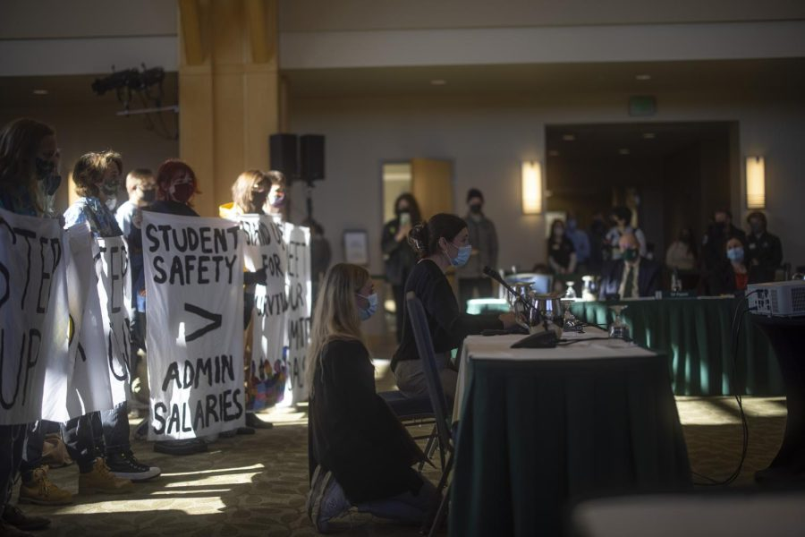

UVM Union of Students publicizes demands for the board of trustees
A student protestor addressed the Full Board committee during public comment Oct. 29. Josh Harwood/THE CYNIC
This article was updated Nov. 1 at 5:36 p.m. to correct the year of a student source.
UVM Union of Students chanted their way into the Full Board of Trustees meeting on Oct. 29, calling out the failure to address sexual assault and other student concerns.
UVMUS stood holding decorated banners behind their speakers who spoke out about the University’s failure to meet environmental goals and address sexual assault on campus, among other issues listed in their demands.
“They hate it when students try to make a ruckus or tell them how to do their jobs,” senior Chrysanthemum Harrell said at the flagpoles. “So that’s why we’re here today, to do exactly just that.”
The list of demands includes abolishing UVM Police Services, achieving carbon neutrality as promised by the failed 2010 Climate Action Plan, not renewing Sodexo Dining Services’ contract upon its expiration in 2024, addressing the mental health crisis on campus and mandating weekly COVID-19 testing for students and faculty.
The demands are starting points as opposed to being comprehensive, Harrell said.
The group marched from the Davis Center flagpoles into the meeting and handed out a list of demands to trustees and urged the board to pursue them during the 12 minute public comment section of the board meeting.
UVM’s sustainability goals attracted many students, and the University’s lack of delivery violates students’ trust, senior Christine Fleming said.
“UVM has an obligation to fulfill its climate action plan to preserve the integrity of its commitments, and to do its part in mitigating the environmental crisis that we learned about every day in our classes,” Fleming said.
The University received criticism for sexual assault since the spring, where a mass protest brought light to the lack of support UVM provides to victims, according to a May 4 Cynic article.
The University responded to a list of demands set forth by the UVM Student Title IX Advisory Committee, agreeing to conduct an independent audit of the Title IX office among other resolutions in a May 19 email from Patricia Prelock, provost and senior vice president.
UVM released a report of the review on the AAEO Office earlier this week, according to an Oct. 26 Cynic article. However, some students are unsatisfied with the report.
“It has been six months since the student walk-out last April and the only thing the University has done is pay Grand River solutions to disguise this public health emergency as poor communication,” junior Sydney Partin said.
UVMUS called for a public apology from President Suresh Garimella for his mishandling of sexual assault and contributions to a culture that does not support survivors.
The protestors acknowledge the work won’t be easy, Harell said.
“We hold no illusions about the difficulty of accomplishing the goals that we have outlined today,” Harrell said. “But for the sake of our community-shared future, it is imperative that each one is pursued with vigor and intentionality.”
Many of the demands overlapped with actions the board of trustees had planned to address in the past. The October 2019 Educational Policy and Institutional Resources Committee meeting highlighted the need for better student mental health services, according to a Sept. 25 2019 Cynic article.
“What side are you on, board, what side are you on? Does it weigh on you at all, board, does it weigh on you at all,” the protestors said, chanting as they left the meeting at the conclusion of the public comment section.
UVMUS will continue to show up to board of trustees meetings and protest until their demands are met, Harrell said.